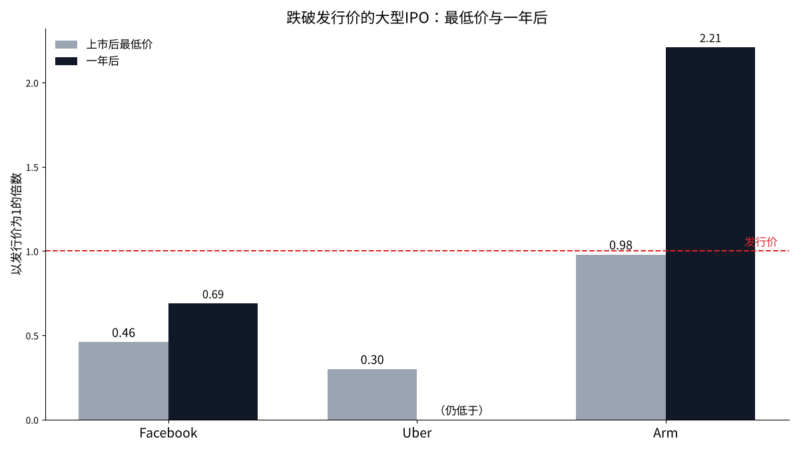
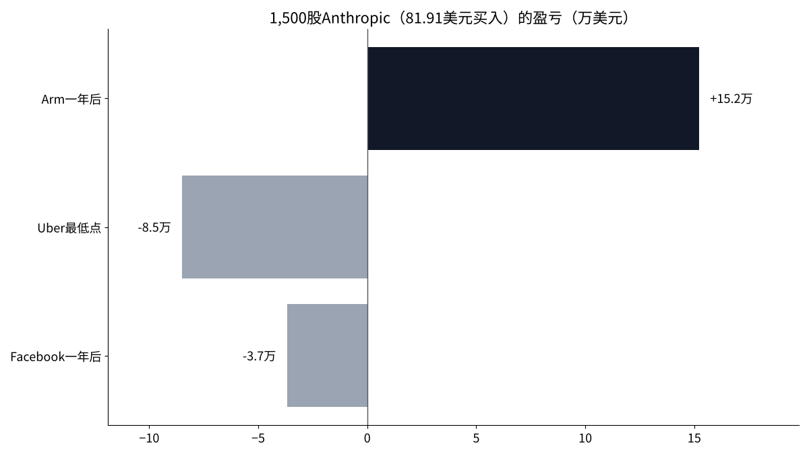

Anthropic跌破83美元发行价。Facebook、Uber和Arm一年后怎样了？——用SEC披露资料和Ritter的IPO统计检验
11月24日，美国AI公司Anthropic在纽约市场首次以低于83美元发行价的价格收盘，收于81.91美元。盘中一度跌至76美元，比首笔成交价111.33美元低约26%。
大型IPO一旦跌破发行价，人们很容易说上市失败了。但过去经历过同样情况的大公司并不少。
本文的问题是：上市后不久跌破发行价的大型科技股，一年后怎样了？
- Facebook上市一年后仍比38美元发行价低31%，但营收一年增长了55%。股价在上市约14个月后才以收盘价回到发行价之上。
- Uber上市首日就跌破45美元发行价，2020年3月跌至13.71美元，约为发行价的30%。股价低于发行价的时间长达约4年。
- Arm上市一周就一度跌破51美元发行价，但一年后约为发行价的2.2倍。上市初期的价格，几乎无法告诉我们一年后的价格。

问题与背景
先统一用语。发行价（IPO价格）是上市前承销商向机构投资者等出售股票的价格。首笔成交价是上市当天市场上最先成交的价格。
IPO的发行价往往定得偏低，上市首日常常上涨。据佛罗里达大学Jay Ritter的统计，美国IPO首日的平均回报为18.8%。
因此，跌破发行价容易被看作“不寻常”的事。Uber在2019年上市时，Renaissance Capital表示，过去5年获风投支持的美国科技公司中，首日收盘低于发行价的约占10%。
影响上市初期股价的因素之一是禁售期（上市前的股东承诺在一定期间内不卖出股票）。禁售期结束后容易出现抛售，所以上市后几个月的股价，往往更多由供需而非公司本身决定。
而IPO的长期表现，与首日的热度是两回事。Ritter与Welch在2002年的论文中指出，以首日收盘价买入并持有3年的回报为22.6%，但同期跑输整体市场23.4%。
数据与方法
比较对象是上市后不久跌破发行价的3家美国大型科技股：Facebook（现Meta）、Uber和Arm。它们上市时募资规模都很大，上市前就备受关注，这一点与Anthropic相近。
对每家公司，从披露资料和当时的报道中取得发行价、首日收盘价、上市后的最低价、一年后的股价，以及上市前后年份的营收。营收依据向SEC提交的年报（10-K）和公司业绩公告。
股价以发行价为1的倍数来比较。一年后的价格使用上市约12个月后的收盘价。Arm因无法取得一年后的准确收盘价，使用上市一年多时相对发行价上涨121%的数字。
这种方法有局限。只有3个样本，时间分别是2012年、2019年和2023年，利率和景气阶段不同，取平均意义不大。结果只是观察趋势的参考，并不代表Anthropic的未来。
结果
| 公司 | 发行价 | 首日收盘价 | 上市后最低价（发行价倍数） | 一年后（发行价倍数） |
|---|---|---|---|---|
| Facebook（2012年5月） | 38美元 | 38.23美元 | 17.55美元（0.46倍） | 26.25美元（0.69倍） |
| Uber（2019年5月） | 45美元 | 41.57美元 | 13.71美元（0.30倍） | 仍低于发行价 |
| Arm（2023年9月） | 51美元 | 63.59美元 | 49.85美元（0.98倍） | 约2.2倍 |
| Anthropic（2026年11月） | 83美元 | 首笔成交价111.33美元 | 76美元（0.92倍・盘中） | — |
Facebook上市当天仅比发行价高23美分收盘，此后持续下跌，2012年9月跌至17.55美元。一年后收盘价为26.25美元，比发行价低31%。
但业务仍在增长。营收从2012年的50.89亿美元增至2013年的78.72亿美元，增长55%。股价首次以收盘价回到发行价之上是2013年8月2日，距上市约14个半月。
Uber首日以42美元开盘，收于41.57美元，比发行价低7.6%。2020年3月因新冠疫情的担忧跌至13.71美元，约为发行价的30%。股价低于发行价的时间长达上市后约4年。
Arm走了相反的路。首日上涨25%，收于63.59美元，但一周后一度跌至49.85美元，跌破发行价。此后半年涨到约125美元，上市一年多时相对发行价上涨121%。
Anthropic从首笔成交价111.33美元起，5个交易日下跌约26%。Arm从首日收盘价63.59美元，一周内跌到49.85美元，跌幅约22%，幅度相近。
回到发行价所需的时间也差别很大：Facebook约14个半月，Uber约4年，Arm约2个月。

敏感性分析
如果Anthropic走上这3家公司中的某一条路，结果会差多少？以83美元发行价为基准，直接套用3家公司的“发行价倍数”。比较的是以11月24日收盘价81.91美元买入1,500股的市值。
| 套用的路径 | 发行价倍数 | 股价参考 | 1,500股市值 | 以81.91美元买入的盈亏 |
|---|---|---|---|---|
| Facebook一年后 | 0.69倍 | 约57美元 | 约8.6万美元 | 约−3.7万美元 |
| Uber最低点 | 0.30倍 | 约25美元 | 约3.8万美元 | 约−8.5万美元 |
| Arm一年后 | 约2.2倍 | 约183美元 | 约27.5万美元 | 约+15.2万美元 |
3条路之间的差距，按1,500股计约为23.7万美元。同样从“跌破发行价”开始，一年后的结果从亏损到翻倍以上不等。

这张表说明，上市初期的价格几乎不能作为一年后价格的线索。3家公司上市初期都在发行价附近或以下，但一年后的倍数从0.3倍到2.2倍不等。
讨论
也有相反的看法：跌破发行价，是承销商与市场估值之差的显现，是“定价过高”的信号。Uber上市前曾传出1,200亿美元的估值，实际定价约820亿美元，仍然跌破了发行价。
不过，区分这3家公司的，看起来更多是上市后的营收增长和利率阶段，而非上市初期的价格。Facebook营收一年增长55%，股价约14个半月后回到发行价。Uber在持续亏损中遭遇景气骤变，恢复花了更长时间。
上市初期流通股少，也会放大波动。软银集团持有Arm约9成股份，市场上流通的股票不到1成。少量股票集中了买卖，价格就容易超出公司本身的变化而大幅波动。
据Nasdaq的分析，IPO三年后跑输市场的股票接近三分之二。也就是说，无论上市初期如何，长期跑赢市场的IPO并不多。
本文有三个局限：只有3个样本；时间和利率阶段不一致；未能取得Arm一年后的准确收盘价。验证的标准是Anthropic上市一年后（2027年11月）的股价，以及这期间的营收增长。如果营收大幅增长而股价仍低于发行价，本文“上市初期的价格不是线索”的结论就会减弱。
结论
上市后不久跌破发行价的3只大型科技股，一年后在发行价的0.3倍到2.2倍之间大幅分化。上市初期的价格，几乎无法告诉我们一年后的价格。
区分它们的是上市后的营收增长，以及当时的利率与景气阶段。看上市初期的股票，比起价格，先看下一份财报的营收增长更有参考价值。
看上市初期的股票，可以归纳为3个步骤。先决定以发行价还是首笔成交价为基准。再看第一份财报中营收增长了多少。最后确认禁售期结束的日期，把前后的股价波动当作供需问题来区分。
我的看法
我买过好几次刚上市的股票，SpaceX是，Anthropic也是。两者上市后都下跌过一次。
按我的体会，刚上市的股票会先跌一次，然后再上涨。所以我事先决定，跌破发行价就买。11月24日跌破了83美元，于是我决定下单1,500股。
看本文3家公司的路径，一年后的结果取决于公司能否成长，而不是价格。我持有Anthropic，是因为我认为它是改变文明的AI公司，而不是因为上市初期的股价。一年后我会核对结果，并补充到这篇文章里。
出处
- TechCrunch「Anthropic shares fall below IPO price, a worrying sign for AI startups」2026年11月24日 https://techcrunch.com/2026/11/24/anthropic-shares-fall-below-ipo-price-a-worrying-sign-for-ai-startups/
- Facebook, Inc.「Form 10-K for the fiscal year ended December 31, 2013」SEC https://www.sec.gov/Archives/edgar/data/1326801/000132680114000007/fb-12312013x10k.htm
- Facebook, Inc.「Facebook Reports Fourth Quarter and Full Year 2013 Results」2014年1月29日 https://investor.atmeta.com/investor-news/press-release-details/2014/Facebook-Reports-Fourth-Quarter-and-Full-Year-2013-Results/default.aspx
- Arm Holdings「One Year After the IPO」2024年9月 https://newsroom.arm.com/wp-content/uploads/2024/09/One-Year-After-the-IPO-Arm.pdf
- Jay R. Ritter「Initial Public Offerings: Updated Statistics」フロリダ大学 2026年2月16日 https://site.warrington.ufl.edu/ritter/files/IPO-Statistics.pdf
- Jay R. Ritter「Initial Public Offerings: Underpricing」フロリダ大学 2026年2月4日 https://site.warrington.ufl.edu/ritter/files/IPOs-Underpricing.pdf
- Ritter, J. and Welch, I.「A Review of IPO Activity, Pricing, and Allocations」NBER Working Paper No. 8805, 2002年2月 https://www.nber.org/papers/w8805.pdf
- Nasdaq「What Happens to IPOs Over the Long Run?」2021年4月15日 https://www.nasdaq.com/articles/what-happens-to-ipos-over-the-long-run-2021-04-15
- phys.org（AP）「Facebook soaring stock closes above $38 IPO price」2013年8月3日 https://phys.org/news/2013-08-facebook-soaring-stock-ipo-price.pdf
- TechCrunch「Uber’s first day as a public company didn’t go so well」2019年5月10日 https://techcrunch.com/2019/05/10/ubers-first-day-as-a-public-company-didnt-go-so-well
- Benzinga「One Year Since Uber’s IPO: A Look At The Stock’s Bumpy Ride」2020年5月 https://benzinga.com/general/education/20/05/15947550/one-year-since-ubers-ipo-a-look-at-the-stocks-bumpy-ride
- AJ Bell「ARM shares break below their listing price」2023年10月31日 https://www.ajbell.co.uk/group/news/arm-shares-break-below-their-listing-price
- The Motley Fool「Where Will Arm Holdings Stock Be in 5 Years?」2024年 https://www.aol.com/finance/where-arm-holdings-stock-5-091500577.html
图表与首图由YUKI CAPITAL制作。本文是作者自己的记录，不构成投资建议。
我每天在X上记录数字和判断。